01
OpenAI 推出用于漏洞研究与修复的 GPT-6 Cyber
OpenAI 发布 GPT-6 Cyber，用于发现可利用漏洞并开发修复，称模型经过训练以遵守授权范围。这把权限边界纳入安全代理的设计目标，对评估漏洞发现与修复自动化的团队具有意义。公告描述的是产品能力与对齐目标，不能替代具体环境中的可靠性验证。
每天一次，过滤 AI 噪音
OpenAI 发布 GPT-6 Cyber，用于发现可利用漏洞并开发修复，称模型经过训练以遵守授权范围。这把权限边界纳入安全代理的设计目标，对评估漏洞发现与修复自动化的团队具有意义。公告描述的是产品能力与对齐目标，不能替代具体环境中的可靠性验证。
SemiAnalysis 分析 Google TPU 在 AI 推理领域对 NVIDIA 软件优势的挑战，简介涉及 TorchTPU、vLLM、SGLang、llm-d 与 Ray 等生态组件。竞争焦点因此超出芯片参数本身，还包括兼容性与服务部署流程。采集简介没有提供可独立核实的成本或性能对比数据。
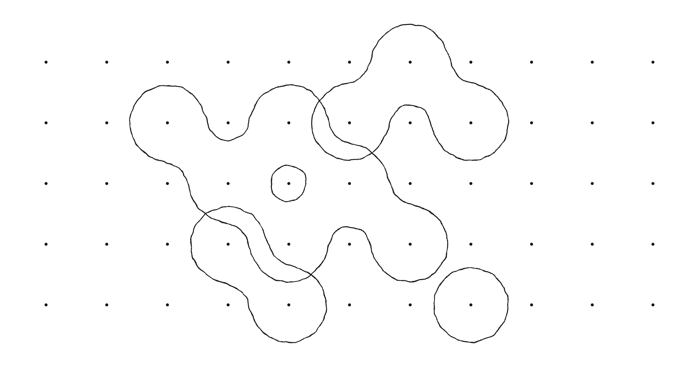
Thinking Machines 发布 Inkling 2 Small，并在 Hacker News 引发讨论。John Schulman 表示发布文章介绍了训练过程和对齐方面的经验。其意义既包括新模型选项，也包括开发经验披露；现有采集证据不足以独立评判竞品排名或部署需求。
Zalando 的 Agentic Identity Broker 为 AI 代理与 MCP 服务提供 OAuth 委托，通过令牌交换避免代理直接接触用户令牌。作者称 0.1 版已在生产中连接数百个代理和数十个服务。目前重点是人类委托；机器触发代理与基于意图的授权仍属于后续计划。
CBC 报道称，AI 数据抓取机器人大量访问大学图书馆，使公共访问面临风险。该报道揭示训练与检索数据采集给共享信息资源带来的成本，图书馆需要平衡开放性与基础设施保护。采集条目没有提供受影响机构数量、请求规模或已实施限制的细节。
Anthropic 发布关于科研人员如何使用 Claude 的研究，并进入当日 Hacker News 讨论。其关注点从单次基准成绩转向助手在科研流程中的作用。科学支持的价值取决于系统如何结合专家知识与验证；采集标题不足以支持具体突破或加速幅度的结论。
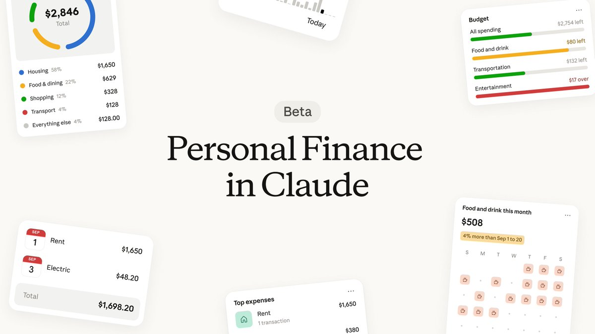
Anthropic 推出美国个人财务测试版，用户可连接指定账户，让 Claude 根据余额与交易记录回答问题。公司强调访问权限为只读，Claude 无法转移、管理或投资资金。这将通用助手带入依赖个人背景的敏感消费场景，同时明确区分读取信息与执行交易的权限。

Google 发布视频生成模型 Gemini Omni 1.2 Flash，强调一致性、创作控制与速度。官方称成本降低 30%，360p 或 720p 草稿价格为每秒 0.07 美元，并可放大到 1080p 或 4K。其意义在于降低迭代成本，再输出高分辨率成片；这些能力与价格来自官方说明。

Runway 宣布接入 GPT Image 2.6，称图像生成提速 50%，并支持 GIF 创作、SVG 导出及保留角色、产品和品牌细节的编辑。该集成为现有创作工作流提供新的模型入口，重点在于修改与素材复用；速度和一致性仍是供应商的声明。

Thomas Wolf 表示，Hugging Face 投入 80 万 GPU 小时开展混合专家实验并整理经验。他认为领先开放模型普遍采用 MoE，但训练知识仍集中在少数团队。该工作的价值是公开实践经验，降低理解与复现实验的门槛；其模型排名描述应视为特定语境下的观察。
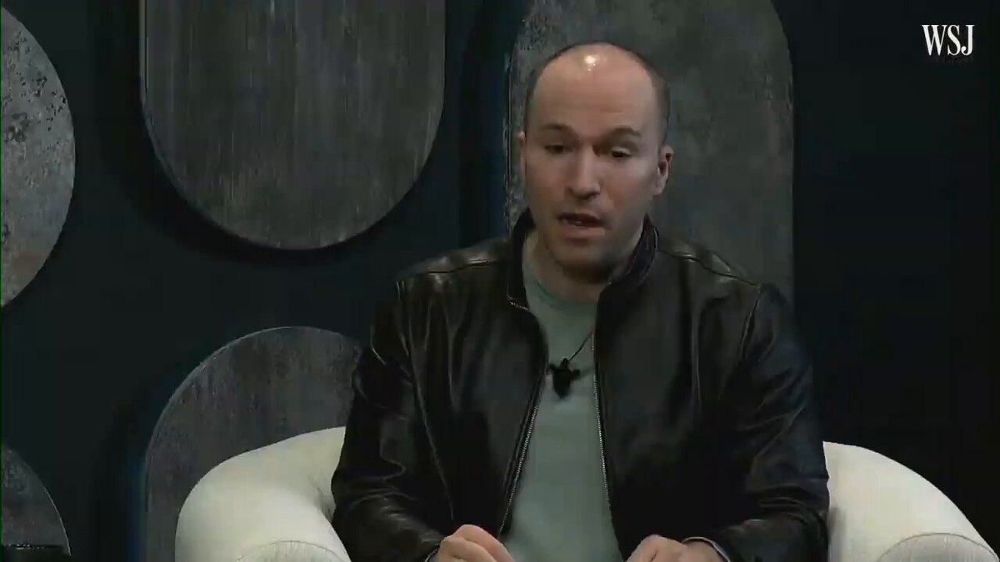
Greg Brockman 宣布 OpenAI 与 JPMorganChase 建立战略合作，探索软件工程、安全防御以及员工和客户服务中的 AI 应用。公告体现跨部门的企业需求，但未提供部署规模、财务条款或经过测量的生产率收益，仍需区分合作意向与实际运营成果。
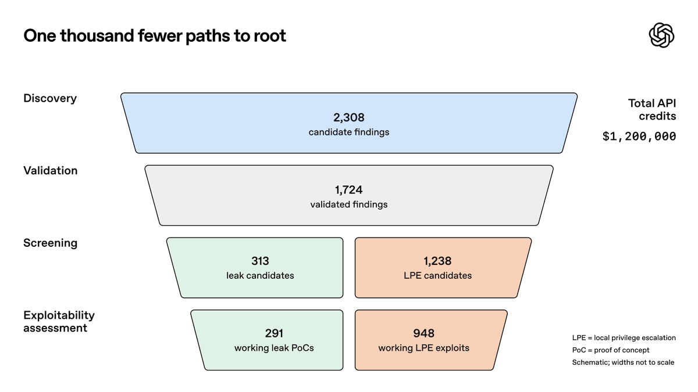
Greg Brockman 称，OpenAI 的安全流水线已发现、验证并为近千个 Linux 本地提权漏洞准备补丁，平均每个约花费 1,000 美元。其重点是把发现、验证与修复准备连接起来，而不只是统计告警。这些数字来自 OpenAI；准备补丁并不意味着所有修复均已发布。
Pika 宣布 H3 Flex 上线创作平台，称生成速度快于实时，面向快速创意迭代。Creator 与 Fancy 订阅用户在 11 月 15 日前每日可获得 15 次免费生成。该推广把速度与试用额度结合起来；实际生产延迟和画质仍需与供应商描述区分。

Greg Brockman 宣布 Pierre 加入 OpenAI，并称其开源开发工具已经用于 Codex 的部分功能。后续方向是协作式 AI 软件开发。公告把已有工具依赖与组织层面的合作连接起来，但没有披露交易条款、整合时间表或当日可用的新产品功能。
Thomas Wolf 介绍 Moonshot AI 的 Kimi-K3.1-Pro，称其总参数为 2.8 万亿，每个 token 激活 1,040 亿参数，属于 Hugging Face 上规模最大的模型发布之一。总参数与激活参数的区别有助于理解 MoE 的存储和计算需求，但无法单独证明推理成本、吞吐量或任务优势。
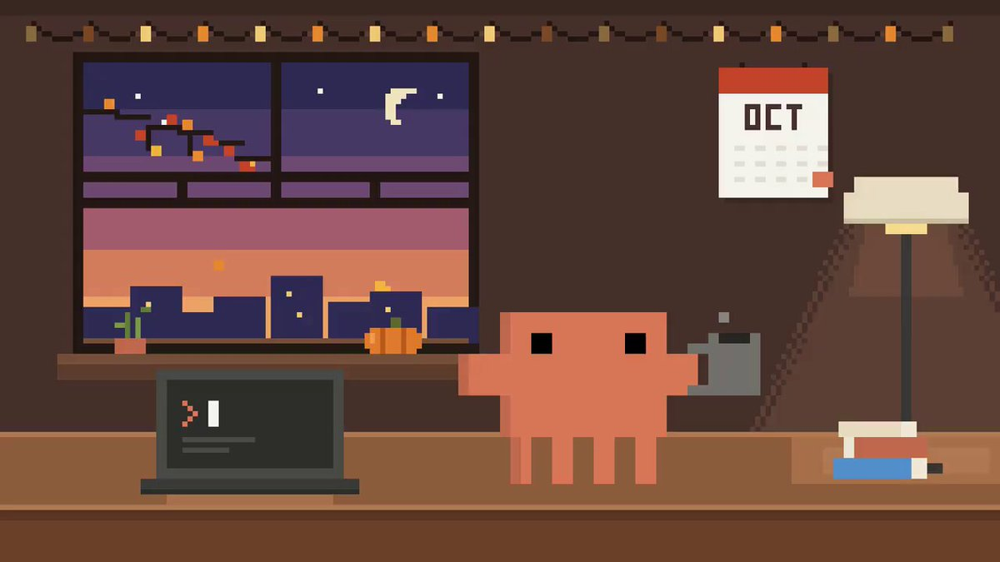
Anthropic 开发者账号回顾 Claude Code 十月更新，包括 mods、桌面端并行会话体验，以及更清晰的使用量信息。改进围绕日常开发流程展开，对同时处理多个编码任务的团队具有实际意义。这是产品更新回顾，并不意味着所有功能都在报告当日首次推出。
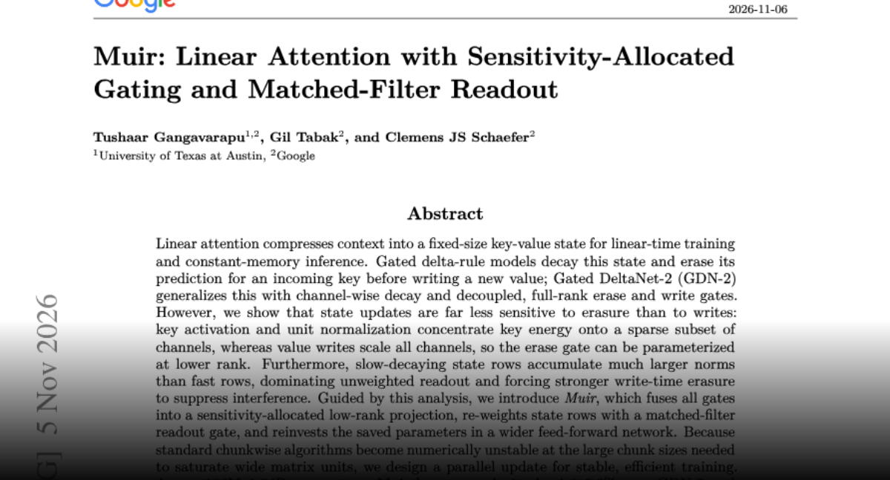
Muir 重新设计线性注意力的擦除、写入与读取机制，按敏感度分配门控容量，并采用匹配滤波读取，将节省的参数用于更宽的前馈网络。作者在 1.66 亿至 13.4 亿参数规模报告困惑度和召回改善，其长序列与吞吐结果仍应限定在实验条件下理解。
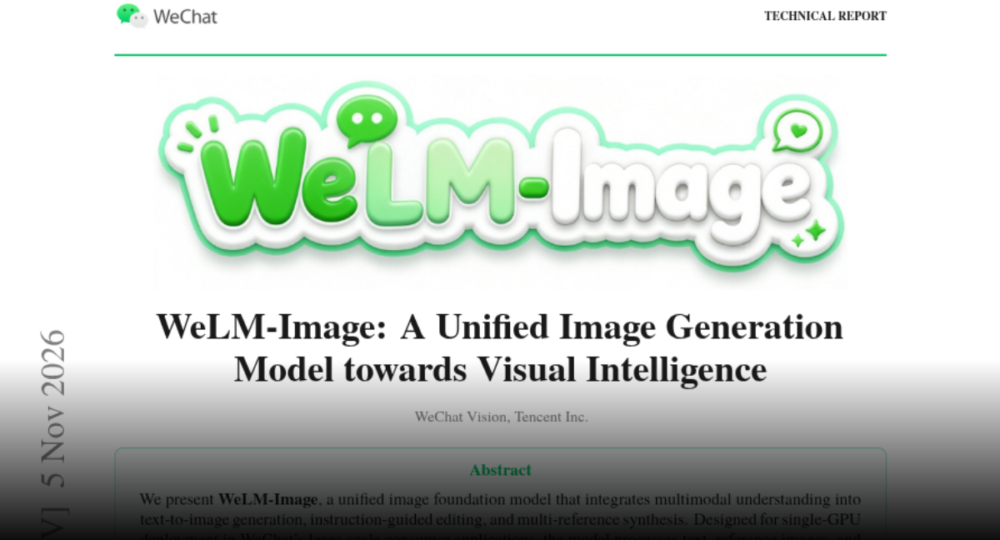
WeLM-Image 将文生图、指令编辑和多参考图合成整合到一个模型，通过共享注意力、分离参数及稀疏专家减少训练干扰。作者面向单 GPU 消费级部署，称 Turbo 版在 H20 上以八步、4.98 秒生成 1024 方图。性能与排名均来自论文所报告的对比条件。
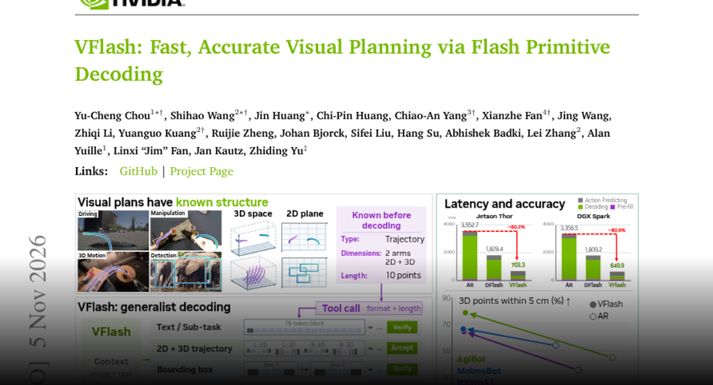
VFlash 联合预测点、框与轨迹等结构化视觉元素，避免逐坐标自回归生成。轻量草稿器利用结构信息，无需与目标 token 完全一致。作者报告轨迹误差下降，初步三维运动预测生成约提速 25 倍，四组 MolmoSpaces 任务成功率为 70.2%，基线为 62.6%。
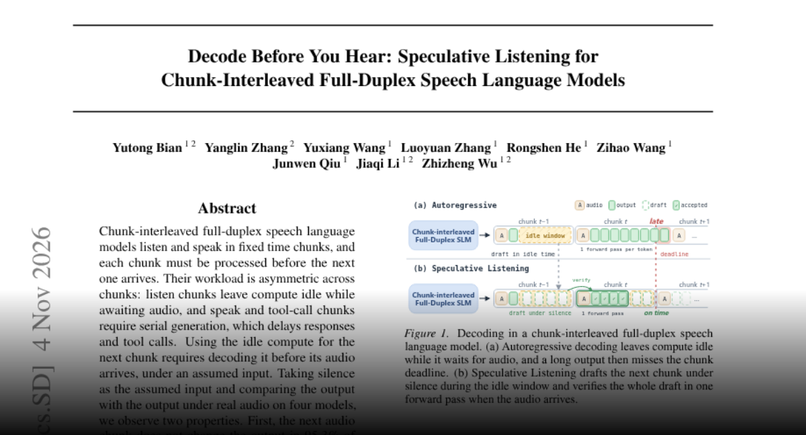
推测式聆听在全双工语音模型等待下一段音频时，假设静音提前生成草稿，并在真实音频到达后验证。作者称其无需训练且保持输出无损，在 TickTock-Bench 上将回复开始前平均解码延迟降低 73%，工具调用片段最高提速 23.4 倍。结论适用于论文测试的分块交错系统。
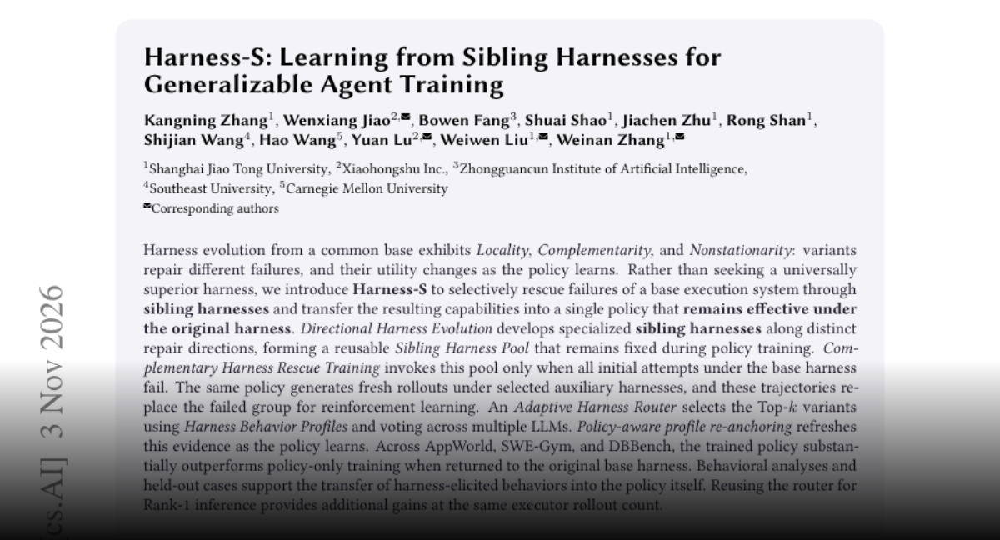
Harness-S 使用一组相关执行框架挽救代理在基础框架下的失败，再将辅助轨迹用于强化学习，使模型回到原框架后仍保留能力。作者在 AppWorld、SWE-Gym 与 DBBench 报告改进。该工作把编排差异转化为训练信号，而非寻找始终优于其他方案的单一框架。
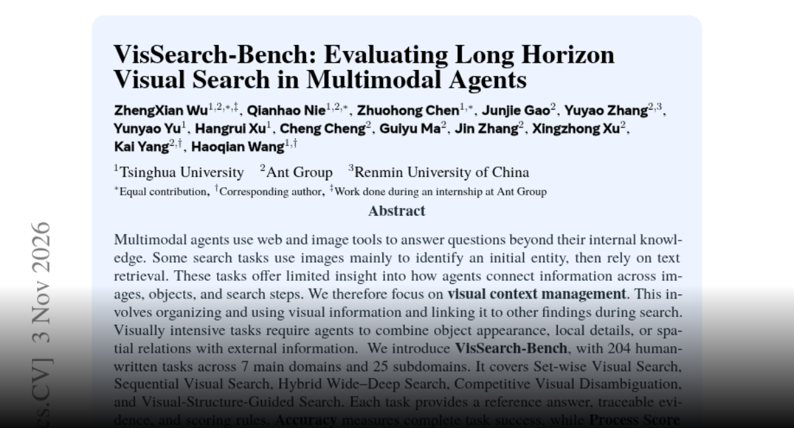
VisSearch-Bench 评估多模态代理在长程搜索中维持与整合视觉证据的能力，包含 204 道人工任务，覆盖七大领域和 25 个子领域。作者称 16 个模型中最佳完整成功率仅为 26.47%。该基准区分完整成功与过程部分得分，说明搜索工具本身不足以保证跨图像和检索结果的连贯推理。